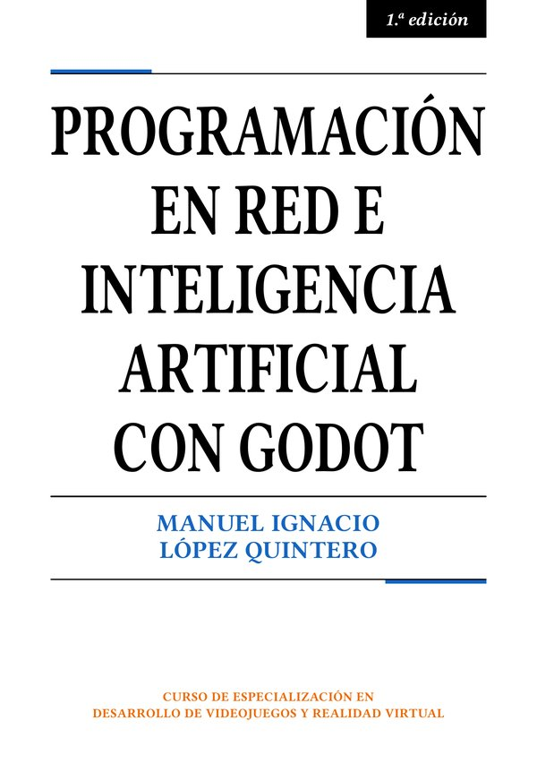

Manuel Ignacio López Quintero
Aquí tienes los archivos que te pide el libro: los sprites de las prácticas, todo su código, las soluciones de los ejercicios de programación en GDScript y los enlaces de todos los capítulos.
Haz clic en uno para descargarlo y arrástralo al panel FileSystem de Godot.
PressStart2P-Regular.ttf: la fuente
de pixel art Press Start 2P, de CodeMan38, para los textos de las prácticas. Su licencia,
la SIL Open Font License, permite usarla en tus juegos, también
en los comerciales, siempre que no la vendas por separado.
Todo el código del libro, capítulo a capítulo y en el orden del texto, con un botón para copiar cada bloque. Escríbelo tú antes de copiarlo, y úsalo para comprobar el tuyo cuando algo no funcione.
codigo.zip: los scripts completos, en una
carpeta por capítulo y otra por práctica, con un LEEME.txt.
soluciones.zip: las de los ejercicios de programación en
GDScript del capítulo 2, en un proyecto de Godot. Descomprímelo, impórtalo desde el gestor de
proyectos con Import y lee LEEME.txt. Míralas solo después de intentarlo.
Todos los enlaces del libro, capítulo a capítulo, para abrirlos con un clic.
Por ahora no hay erratas conocidas.